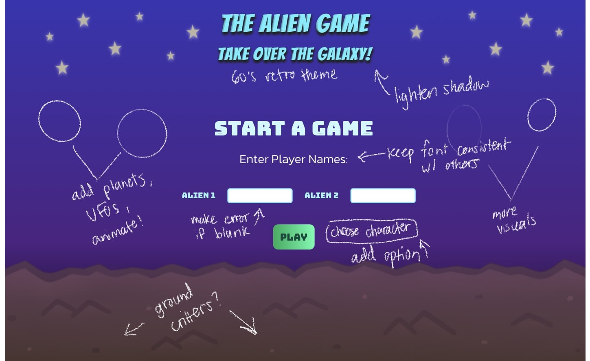
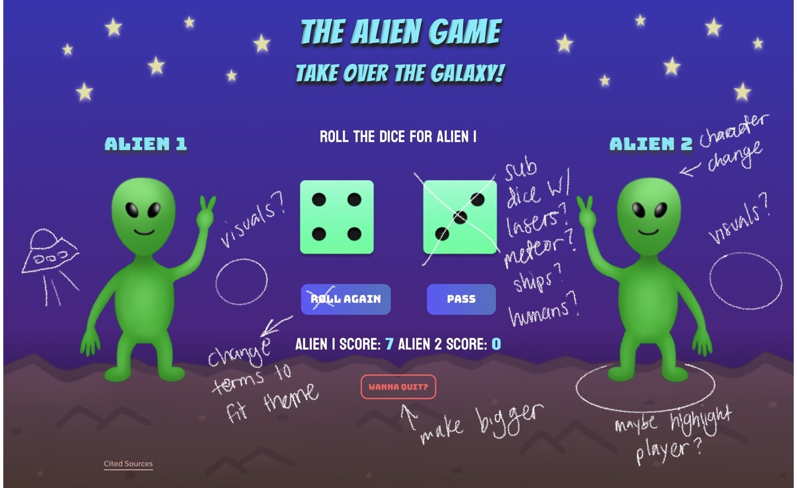

Expert 1: Sky the TA
1. Who critiqued your work and what qualifications do they possess that makes their opinions on design valid?
The class undergrad design tutor, Sky, critiqued my work. He is qualified because he specializes in visual designs and has seen a variety of work from other students as well. Reviewing previous work for other students has helped him build the skills to differentiate between good and bad designs.
2. Design critique notes: what is strong and what can be improved in terms of visual design for the project.
In terms of aesthetics, Sky says that I have a strong foundation of an alien theme. The main title has a retro '60s sci-fi aesthetic that I should build off of. The alien character is also cute and eye-catching along with the button outlines that appear when the mouse hovers over them. Although he does suggest that I add more of that hover effect to all of the buttons. Besides adding extra background visuals, he recommended that I keep my fonts cohesive by reducing the amount of font families I use. Having too many fonts causes my text to feel unorganized and scattered. The header title should also have a fainter drop shadow because its existing black drop shadow makes it look like it is in default form. Lastly, he suggested that I play around with various color palettes to see if I should change any colors or add more in.
Expert 2: Lloyd Wheeler
1. Who critiqued your work and what qualifications do they possess that makes their opinions on design valid?
A UC Davis design professor, Lloyd Wheeler, also critiqued my work. He is qualified because he has professional experience as a software developer, UX/UI designer, and design professor. He has worked with industry teams involving design and mentored a number of students with their design work. His expertise in the tech and design field as well as his years of teaching improves him credibility to provide quality feedback.
2. Design critique notes: what is strong and what can be improved in terms of visual design for the project.
As an avid gamer himself, Lloyd likes the nostaglgic feel to my current visuals with the cartoon-retro style. He likes that the characters and colors are vibrant and eye-catching to engage the user. However, he thinks the instruction pop-up is too tedious, especially with the excess wording. He suggests that I summarize the instructions so that it doesn't overwhelm the user. He also recommends having the instructions only pop up once for better usability. In terms of the buttons, he believes the sizing should increase for legibility and he also recommends that I keep the button hover outline effect consistent among all buttons. The background is also very bare and I should make a distinct form of the background for the start page compared to the actual gameplay. For example, adding more visual elements to the start page may hook the user into playing the actual game. However, I should keep the gameplay visuals more simple in order to highlight the main elements more clearly. Lastly, I should have more animated items as well as a winning feedback page for improved engagement.
Image Mark-Up
Images marked up with improvements to be made.

